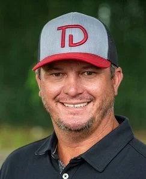

The South Carolina Equine Alliance is a coalition of groups and individuals dedicated to promoting and growing the horse industry here in our state.
With all of our natural advantages, and our deep historical ties to the industry, it’s time South Carolina horse interests united to tell our story and take our rightful place alongside states like Virginia and Kentucky. After all, horses were racing in South Carolina 141 years before the first running of The Kentucky Derby.
The SCEA unites interests in the state to advocate for the horse industry and help it grow in the years ahead. This is a coalition that runs from farmers to jockeys; from fans of The Carolina Cup in Camden to vendors at Aiken’s Triple Crown. We know that the horse industry is a major job creator and tax revenue generator in the Palmetto State—and it deserves more support and more champions.
South Carolina should be an equine industry leader. We have a climate conducive to year-round racing and training. Our location along I-95 on the Eastern Seaboard puts us within easy traveling distance for horse racing fans up and down the coast. Our historical connections to the horse industry, and racing and competing in all its forms, is unmatched.
It’s time to highlight the fun, the jobs, and the tax revenue the horse industry brings to South Carolina! Please contact us to join the Alliance, and sign up for our emails and texts to stay up to date on all of our activities!
Gordon Lawson serves as the Chairman of the Aiken Horse Park (Bruce’s Field). He is committed to growing all equestrian disciplines throughout the state. Gordon is the CEO of PeopleScape — an AI company transforming human capital management for global organizations. He is a former naval officer and graduate of the US Naval Academy.
Arch Kingsley is a National Champion Steeplechase jockey who has lived his life for the care and competition of Thoroughbred horses. As a race horse trainer he has competed successfully at the highest level training multiple stakes winners, specifically campaigning Eclipse Award Champion Merry Maker, as well as Eclipse finalists Show Court, and L’Imperator. Arch has practiced as a professional blacksmith over two decades, and his expertise and travels have taken him to work for top connections at racing jurisdictions around the world, and to most of America’s most storied racetracks. Arch well understands the economics of the global thoroughbred marketplace and wants to see South Carolina reclaim its prominence on the world stage. Arch has a farm in Camden, SC where he lives with his wife and daughter with a successful business dedicated to the development of the elite Thoroughbred athlete.

Travis Durr’s interest in horses traces back to his grandfather and father, who both raced Quarter Horses. At the age of 12, he rode races on bush tracks in Georgia and South and North Carolina. As his family transitioned to Thoroughbreds, Durr began breaking young horses and took over the family business in 1995. He began breaking horses in St. George, South Carolina, for local clients in 2007. Travis then joined the Webb Carroll Training Center in Matthews, South Carolina. In October 2016, Durr and his wife Ashley then purchased the training center from Carroll.
Travis Durr Training Center has since become a powerhouse for transforming raw talent into racing legends. With first-class facilities, expert trainers, and an unyielding commitment to excellence, they guide every horse to its peak potential. From early conditioning to race-day readiness, Travis Durr’s team lays down the foundation for champions, ensuring that every Thoroughbred leaving the center is built to dominate the track.